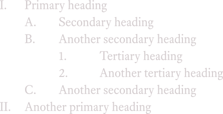

Traditionally,
This is a terrible way to label hierarchical headings.
Roman numerals and romanettes stink. They’re difficult to read. (Quick, what number is XLIX?) They’re easy to confuse at a glance. (II vs. III, IV vs. VI, XXI vs. XII.) If what we mean by I, II, III is 1, 2, 3, then let’s just say so.
Letters aren’t much better. Though we immediately recognize A, B, C as equivalent to 1, 2, 3, the letter-to-number correlation gets weaker as we go past F, G, H. (Quick, what number is T?) If what we mean by J, K, L is 10, 11, 12, then let’s just say so.
Mixing roman numerals and letters results in ambiguous references—when you see a lowercase i, does it denote the first item or the ninth item? Does a lowercase v denote the fifth item or the 22nd item?
By using only one index on each header, it’s easy to lose track of where you are in the hierarchy. If I’m at subheading d, is that d under superheading 2 or 3?
If you need to write a document with hierarchical headings, take a cue from technical writers, who solved this problem long ago—by using tiered numbers as indexes for hierarchical headings.
So instead of:

You’d have:

To my eyes, this system is more understandable—because it only uses numbers, it avoids ambiguity or miscues. It’s also more navigable—because every tiered number is unique, it’s always clear where you are in the hierarchy. And every word processor can automatically produce tiered numbering. Consider it.
CSS will produce numbered headings by default if you use the
<ol>(ordered list) tag, but tiered numbers require a little extra work—investigate thecounter-incrementproperty.